SURFACE EMG → DIGITAL INPUT → VISUAL FEEDBACK
让肌肉成为
电脑输入
看到目标后握拳。MyoWare读取前臂肌电，Arduino把阈值跨越变成一次数字事件，电脑记录反应时间并把结果立即反馈给人。
01 单通道前臂sEMG
30 次反应时试验
0 个机械执行器
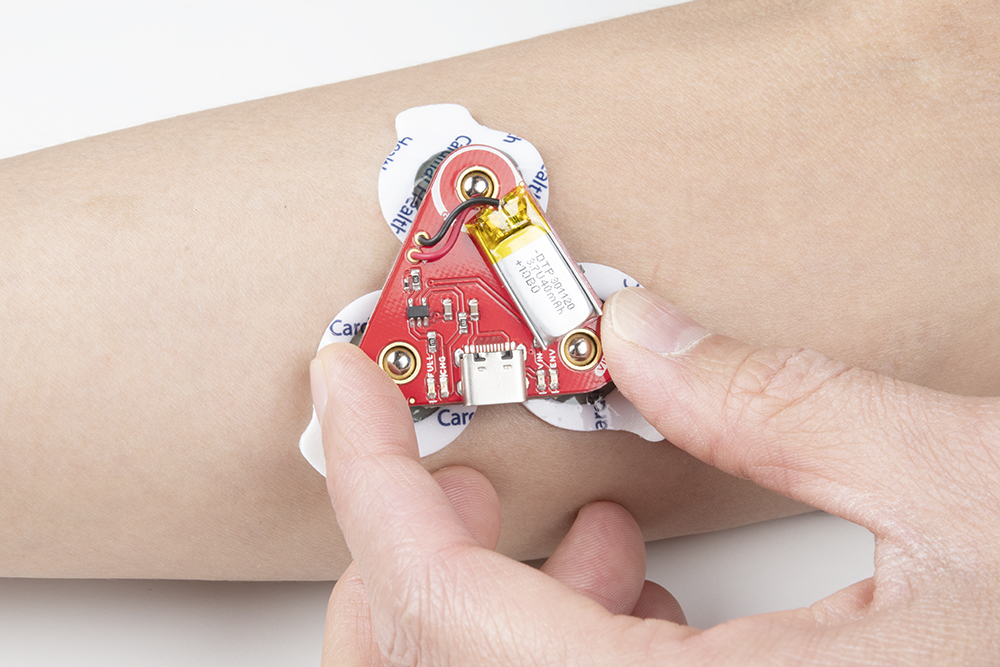
LIVE ENVELOPE
EMG482
THRESHOLD300
SPACE EVENT ✓
01 · WHAT THIS EXPERIMENT DOES
不是测握力，
而是把肌肉激活变成输入。
MuscleKey复现University of Richmond发表的“肌电代替键盘”方法：肌肉信号越过个人阈值时，微控制器向电脑发送一次输入事件，再由软件记录反应时间。原研究证明了这条链路能够用于人机交互实验。[1]
表面肌电 sEMG
读取肌肉活动产生的皮肤表面电位变化，不等同于直接测量握力或关节力矩。
一次阈值跨越
信号由阈值下方越过上方时触发一次；持续用力不会连续触发。
可分析的数据
保存反应时间、误触发、漏触发、EMG值与个体阈值，最后导出CSV。
02 · MATERIALS
一套单通道系统，
完成硬件、代码和实验全过程。
最省事的路线是购买完整Development Kit；但SparkFun已经将该套装标记为停产和缺货。找不到库存时，按下表分开购买即可。[3]
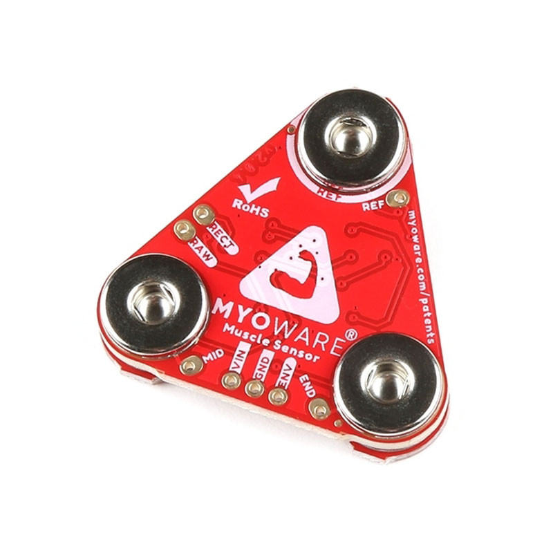
MyoWare 2.0 Muscle Sensor
放大、滤波、整流并输出ENV包络信号。购买时优先寻找当前版本DEV-27924。
作用：生理信号采集Link Shield + TRS线
把传感器的供电、地线与ENV信号通过一根3.5 mm线送到Arduino Shield。
作用：免焊接信号连接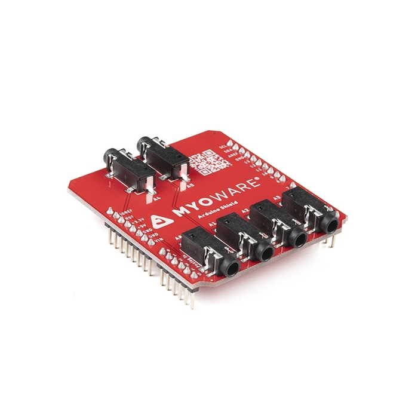
MyoWare Arduino Shield
直接叠在Uno R3兼容板上。本实验只用A0接口，其余通道留作以后扩展。
作用：把传感器接到模拟输入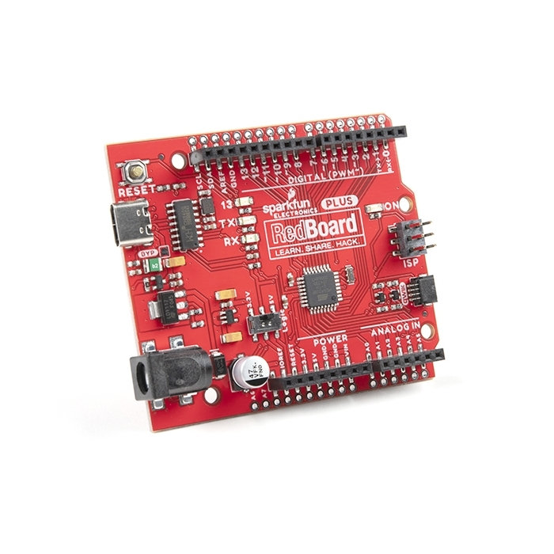
RedBoard Plus
Arduino Uno兼容开发板，读取A0数值、执行阈值逻辑，再通过USB发送到电脑。
作用：采样与事件判断一次性表面EMG电极片
每次实验使用三片。多买一些用于重新贴附、跨日测试和失败排查。
作用：皮肤—传感器接触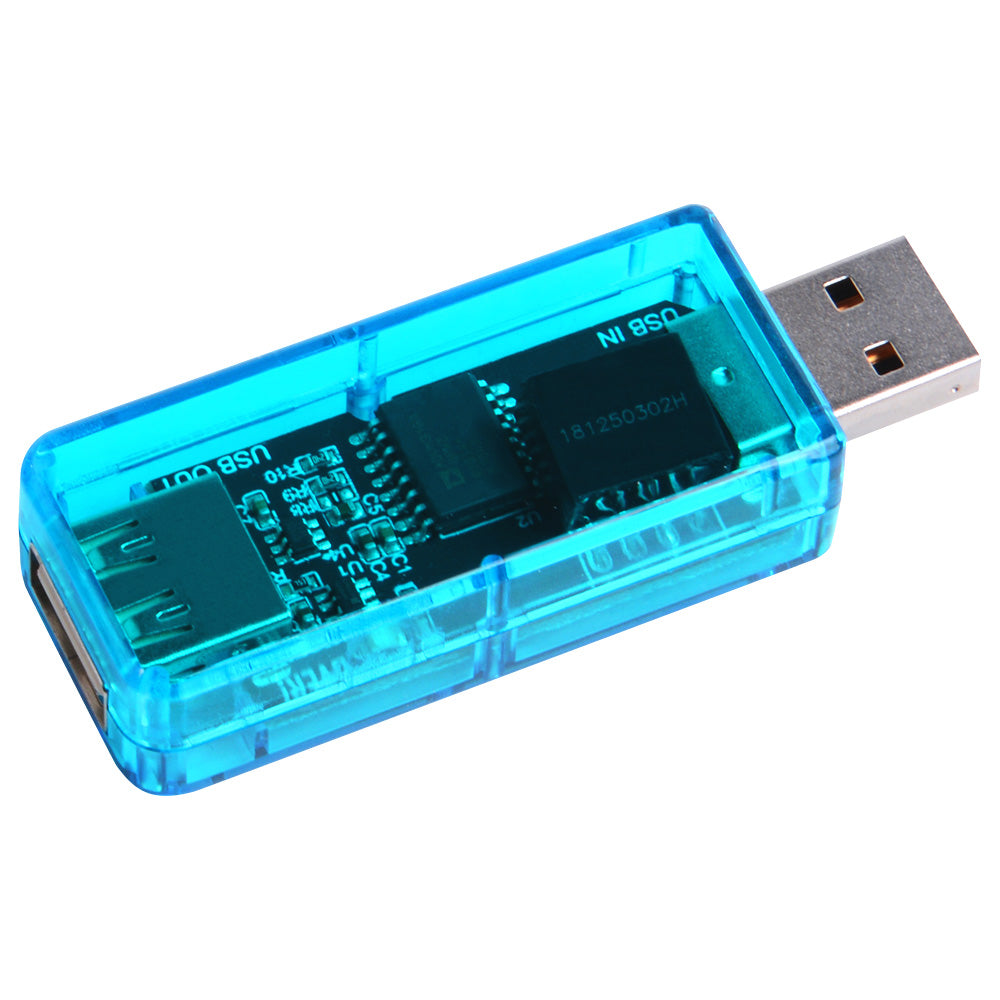
USB隔离器
放在电脑和RedBoard之间。具体型号和隔离规格须由实验室负责人确认；普通模块不能自动视为医疗级隔离设备。
作用：候选隔离措施，须经实验室确认酒精棉片、医用胶带、收纳盒
清洁皮肤、固定线材、减少运动伪影，并保证每次实验采用相同的安装流程。
作用：重复性与整理LED Shield 或 Power Shield
两块Shield都自带电池，只选择一种单独连接传感器完成无Arduino自检，绝不同时叠加。
作用：快速硬件自检03 · PRINCIPLE
电活动被处理成一个数，
一个数再变成一次动作。
运动单位募集
握拳时，神经系统募集前臂肌肉中的运动单位，皮肤表面的电位发生变化。
差分电极
MID与END沿肌纤维方向测量，REF提供参考；三者共同抑制一部分共模噪声。
ENV包络
MyoWare放大、滤波、整流并平滑信号，输出0到供电电压范围内的模拟量。[4]
ADC与阈值
RedBoard把电压转成数字值；超过个人阈值时生成一次事件。
软件反馈
网页停止计时、显示成功状态、记录CSV，人根据反馈调整下一次动作。
个人阈值的初始计算
T = (Rmax + Cmin) ÷ 2
- Rmax
- 放松阶段记录到的最高值
- Cmin
- 正常握拳阶段稳定出现的最低值
- T
- 二者之间的初始触发阈值
TRIGGER 300
RELEASE 190
EVENT
双阈值避免抖动
超过高阈值只触发一次；必须下降到较低的释放阈值后，系统才允许下一次触发。这比单一阈值稳定。
04 · CONNECTION & SAFETY
只需要一条
可检查的信号路径。
人体侧前臂三电极MID · END · REF
→
传感器MyoWare + LinkENV · VIN · GND
→
线材3.5 mm TRS单根免焊接
→
微控制器Shield A0 + RedBoardAnalogRead
→
隔离USB Isolator电脑必须脱离市电
→
软件侧实验网页事件 · RT · CSV
可以做
- 使用电池供电、未接充电器的笔记本
- 在电脑与RedBoard之间加入USB隔离器
- 每次连接或拆卸Shield前先断电
- LED/Power Shield必须从传感器拆下后才能充电
- 只贴在完整、无刺激的前臂皮肤
- 以“非医疗教学原型”描述结果
不要做
- 人体连接时给笔记本充电或连接扩展坞
- 人体连接时给LED/Power Shield充电
- 同时叠加LED Shield与Power Shield
- 把传感器贴在胸部、颈部或破损皮肤
- 把廉价EMS刺激器接进这条线路
- 把EMG数值称为精确握力
- 未经同意在其他参与者身上试验
安全要求依据SparkFun官方MyoWare教程：连接人体并进行USB调试时建议使用USB隔离；没有隔离器时，使用未接墙上电源的电池供电笔记本。Power/LED Shield充电前必须从人体侧传感器拆下。[2]
05 · FOOLPROOF INSTRUCTION
照着照片做。
每一步都有验收标准。
这不是摘要，而是一份可以放在工作台旁逐项勾选的操作手册。先完成当前步骤的“成功标志”，再进入下一步；如果不符合，就按“失败时检查”处理。
YOUR PROGRESS
0 / 10
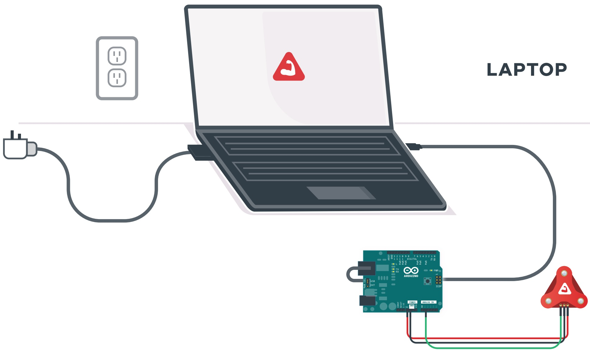
先把人体测量变成安全的离线系统
准备好
电池有电的笔记本、USB隔离器、USB线；检查前臂皮肤完整，没有伤口或明显刺激。
不要这样做
人体连接传感器时，严禁给笔记本、Power Shield或LED Shield充电，不接扩展坞；不贴胸部、颈部或破损皮肤；本项目不接任何EMS刺激器。
照着做
- 保存文件并拔掉充电器。
- 确认屏幕仍亮，电池模式可用。
- 把USB隔离器放在电脑与RedBoard之间。
- 拍一张包含“已拔下充电器 + 隔离器”的安全照片。
成功标志
电脑可以运行，但墙上电源与人体测量线路没有连接；安全照片清楚可读。
失败时检查
电池不足就先充满、拔线后再开始；没有USB隔离器时，只能使用未接市电的电池笔记本。
清点零件，并建立可审查的项目目录
准备好
MyoWare传感器、Link/Power/LED/Arduino Shield、TRS线、RedBoard、USB隔离器、电极片、酒精棉、电脑。
不要这样做
不要在通电状态叠放Shield；不要把包装全部丢掉，型号和订单信息是作品集证据。
照着做
- 按照片顺序把零件摆在白纸上。
- 逐个写下名称、数量、型号和用途。
- 建立 hardware、arduino、web、data、analysis、docs 六个文件夹。
- 拍一张俯视开箱照，放入 docs。
成功标志
BOM中每个实物都能在开箱照里找到；六个目录都已建立。
失败时检查
缺电极片或隔离器就先暂停人体测试；缺LED Shield可以跳过第3步，但不能跳过安全步骤。
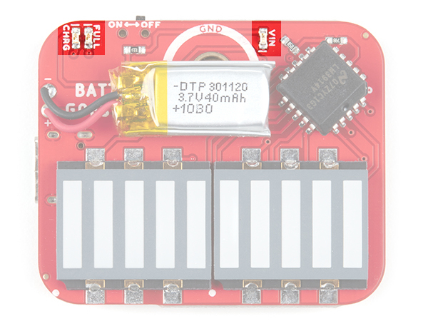
用LED Shield完成最小可行自检
准备好
MyoWare传感器，以及已预先充满电的LED Shield或Power Shield，二选一；本步不连接RedBoard或电脑。
不要这样做
不要同时叠加两块带电Shield；连接人体时严禁充电；不要歪着压卡扣或用金属工具撬。
照着做
- 在无人连接状态完成充电，然后拔掉充电线。
- 选择LED Shield或Power Shield其中一块。
- 断电状态下对齐GND/REF和三个卡扣，在桌面上均匀按合。
- 贴到前臂后打开电源。
- 放松5秒、轻握2秒、放松5秒，重复3次并录像。
成功标志
LED Shield灯条或Power Shield的ENV灯随轻握增强、放松下降；三轮趋势一致即可。
失败时检查
完全不亮：关闭电源、从人体移除并拆下Shield后再检查电池；一直满格：先重贴电极并减少线材拉扯，不要先拧增益。
找到目标肌肉，并清洁同一块皮肤
准备好
酒精棉、纸巾、可水洗皮肤笔、手机相机；手掌朝上坐好，前臂放松。
不要这样做
不要贴在有毛发堆积、乳液、汗液、伤口或红肿的位置；不舒服就立即停止。
照着做
- 轻握拳，触摸前臂掌侧最明显收紧的位置。
- 用皮肤笔画一条沿前臂长度方向的小线。
- 用酒精棉从中心向外擦拭。
- 等待完全干燥，并拍“空白定位照”。
成功标志
照片能看到目标区域和方向线；皮肤干燥、无不适，位置可在下一次复现。
失败时检查
找不到收紧位置：换成更轻、更慢的握拳；皮肤仍湿就多等30秒，不能立刻贴。
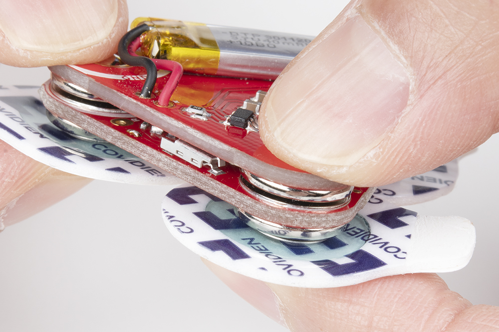
先扣电极，再把整组传感器贴到前臂
准备好
3片新的扣式电极、MyoWare传感器、上一步定位照；确认传感器电源关闭。
不要这样做
不要先把电极粘在皮肤上再用力扣板；不要让MID与END横跨肌肉方向；不要重复使用失去粘性的电极。
照着做
- 在手外把三片电极扣到传感器底部。
- 撕掉背胶，不碰中央导电胶。
- MID放在肌腹中部，END沿肌肉长度方向，REF放在相邻活动较少处。
- 轻压胶圈固定，并拍正上方佩戴照。
成功标志
三个胶圈完整贴合，板子不晃动；照片能清楚辨认手的方向、MID/END/REF和前臂位置。
失败时检查
边缘翘起就换新电极；动作时板子晃动就固定线材，仍不稳则重新清洁与粘贴。
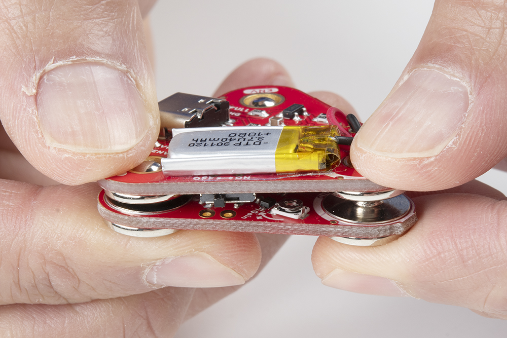
按一条固定路线连接硬件
准备好
佩戴好的传感器、Link Shield、3.5 mm TRS线、Arduino Shield、RedBoard、USB隔离器。
不要这样做
不要让LED/Power Shield继续留在传感器上；不要通电插拔Shield；不要让TRS线悬空拉扯手臂；不要接错Arduino通道。
照着做
- 关闭电源，拆下第3步使用的LED或Power Shield。
- Arduino Shield垂直插到RedBoard。
- Link Shield按GND/REF方向扣到MyoWare。
- TRS线一端接Link Shield，另一端接Arduino Shield通道A0。
- 电脑 → USB隔离器 → USB线 → RedBoard。
- 对照下一步的完整接线图逐项复核。
成功标志
接线链只有一条清楚路径：前臂 → MyoWare/Link → TRS → A0 → RedBoard → 隔离器 → 电池笔记本。
失败时检查
卡扣对不上就停下核对GND/REF，不能硬压；拆卸时按官方方式从边缘均匀分离，不扭板。
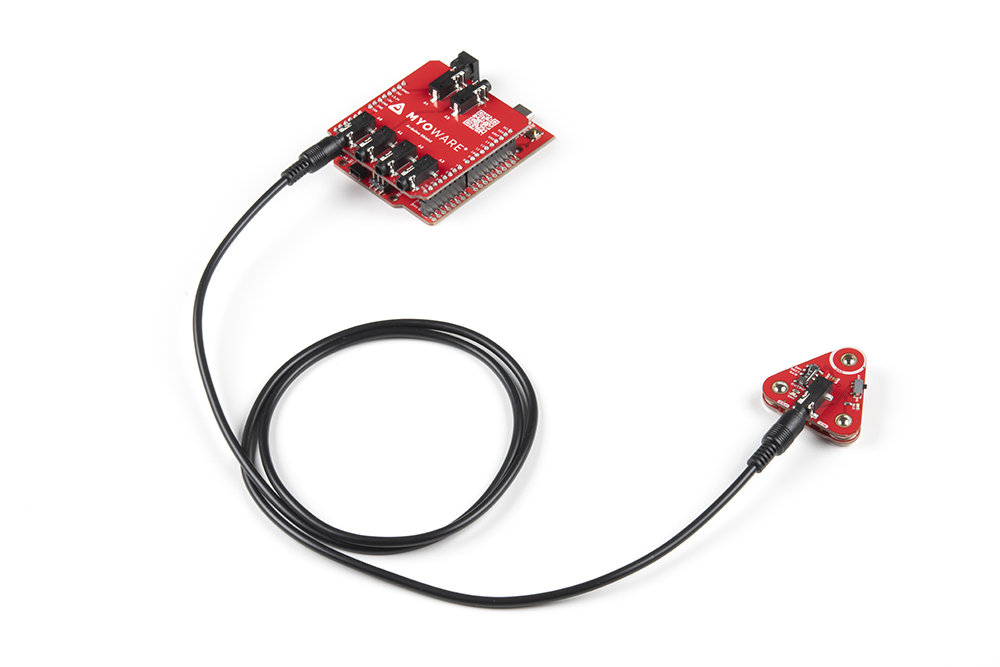
上传单通道Analog Read示例
准备好
Arduino IDE、官方MyoWare Arduino Library、已连接的RedBoard；保存代码到arduino文件夹。
不要这样做
不要从陌生博客复制不明代码；不要一开始同时读多通道；不要在串口监视器和绘图器中设置不同波特率。
照着做
- 安装Arduino IDE。
- Library Manager搜索并安装MyoWare库，或使用官方GitHub版本 [4]。
- 打开单传感器Analog Read示例。
- 选择实际开发板与串口，把输入设为A0。
- 上传，打开Serial Monitor，使用示例定义的波特率。
成功标志
IDE显示上传完成；串口持续出现数字；放松与握拳时数字范围有可重复变化。
失败时检查
无法上传：重选Board/Port并关闭占用串口的窗口；只有0或满量程：重新确认A0、TRS和输出模式。
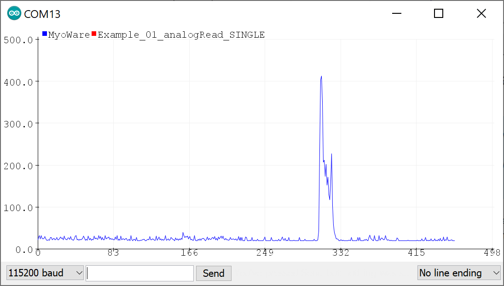
先看曲线质量，再谈阈值
准备好
已上传的Analog Read程序、Arduino Serial Plotter、手机计时器、data文件夹。
不要这样做
不要把峰值大小直接叫作握力；不要为追求“漂亮曲线”先调增益；不要在电极位置改变后沿用旧阈值。
照着做
- 打开Serial Plotter。
- 放松10秒并记下最高值Rmax。
- 轻握2秒、放松3秒，重复5次并记下最低峰值Cmin。
- 正常握拳再做5次。
- 保存全屏截图和原始数值。
成功标志
至少5次收缩都有峰；松开后能回到接近基线；最理想是Rmax明显低于Cmin。
失败时检查
基线乱跳：手臂静止、固定线材、重贴电极；信号无变化：核对A0与输出模式；先解决接触问题再调参数。
把连续EMG变成一次“肌肉按键”
准备好
上一步的Rmax与Cmin、带注释的Arduino代码、网页中的交互原型。
不要这样做
不要直接照搬网页里的300/190示例值；不要让持续握拳连续产生多次事件；不要省略重新放松才能复位的规则。
照着做
- 先取触发阈值T = Rmax + 0.4 × (Cmin − Rmax)。
- 释放阈值设得低于T，形成滞回。
- 加入约250 ms防抖和“触发后必须松开才复位”。
- 按“放松 → 轻握 → 放松”做10轮。
- 记录正确触发、误触发和漏触发。
成功标志
10轮中至少9轮只触发一次；放松时无误触发；持续握住不会连发。记录实际阈值，不追求通用数值。
失败时检查
放松误触发就提高T或重贴电极；轻握漏触发就适度降低T；连发则检查释放阈值、状态变量和防抖。
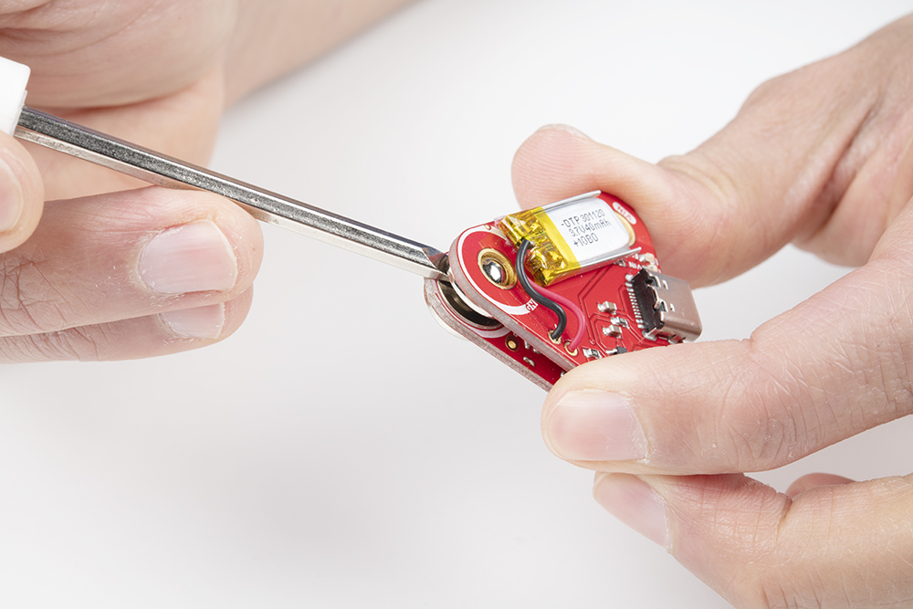
完成30次个人工程试运行，并把两类证据分开保存
准备好
第8步真实Serial Plotter记录、第9步阈值记录、当前网页模拟界面、屏幕录制和独立文件夹。
不要这样做
当前网页不读取MyoWare：模拟数据不能作为人体研究结果，也不能与真实串口数据混在同一CSV；不要称为医疗或复健效果。
照着做
- 将真实硬件记录放入data/real，将网页输出放入data/simulated。
- 在网页练习5次，确认交互逻辑。
- 运行30次模拟试验，每10次休息30秒，导出CSV并在文件名加入simulated。
- 另存第8步的真实串口数据、采样率和电极记录。
- 录60–90秒视频，分别标注“真实硬件信号验证”和“模拟交互逻辑”。
- 先断电，再从人体移除并拆开传感器与Shield。
成功标志
查看者能区分真实信号证据和模拟交互证据；不存在把模拟CSV冒充真实参与者数据的情况。
失败时检查
数据异常先保留原文件并写实验日志；若电极移动或阈值漂移，停止本轮、重新校准，不能悄悄删除坏数据。
06 · INTERACTIVE PROTOTYPE
现在就试一次：
肌电怎样变成按键。
这个页面只模拟ENV信号和阈值逻辑，不读取真实硬件。只有完成并验证串口接入、实际采样率、统一时间戳和端到端延迟后，才能将真实MyoWare数据用于工程试验记录。
WAIT
等待绿色目标
GO
现在握拳
点击“开始一次试验”，然后等待目标变绿。
LIVE ENV110
TRIGGER300
RELEASE190
LATEST RT—
EMG envelopeTrigger 300Release 190
READY FOR INPUT
模拟记录先理解逻辑，再连接真实硬件
VALID0
MEDIAN—
FALSE START0
MISS0
TRIALSTATUSREACTIONPEAK EMG
07 · HOW TO CITE
引用不是装饰，
而是说明哪部分来自哪里。
引用论文
当你说“肌电可以替代电脑按键”“研究通过个人阈值采集反应时”时，引用University of Richmond论文。
Crawford, L. E., Vavra, D. T., & Corbin, J. C. (2017). Thinking Outside the Button Box… Collabra: Psychology, 3(1), 15. https://doi.org/10.1525/collabra.92
引用官方文档
电极方向、Shield连接、ENV输出、USB隔离和非医疗声明，应引用SparkFun/Advancer Technologies官方文档。
SparkFun Electronics. (n.d.). Getting Started with the MyoWare 2.0 Muscle Sensor Ecosystem. Accessed 26 Aug 2026.
引用GitHub仓库与许可证
在README中写清仓库地址、使用的示例名称、修改内容和许可证；不要把官方示例写成自己的原创驱动。
Advancer Technologies. MyoWare-Arduino-Library. GitHub repository, MIT License.
图注紧跟图片
图片下面标记作者/网站、图片用途和编号；页面末尾再列完整链接。产品照片不能替代对性能的实验验证。
Figure 2. MyoWare 2.0 forearm attachment example. Source: SparkFun Electronics [2].
08 · WHY THIS HELPS NEXT
小实验的价值，
是把研究能力变成可验证证据。
人体与肌肉
能说明前臂肌群、电极方向、肌腹与参考电极，而不是只会接模块。
证据：电极标注图生理传感
理解raw、rectified与envelope的区别，并知道sEMG不是力传感器。
证据：信号曲线嵌入式代码
完成模拟采样、平滑、双阈值、状态机、防抖和串口输出。
证据：Arduino仓库网页交互
把硬件事件映射到界面状态、计时、反馈、数据表和CSV。
证据：可运行原型实验设计
设置练习、随机等待、误触发、漏触发、休息和停止条件。
证据：实验协议数据分析
报告中位数、离散程度与失败率，不只展示一条漂亮曲线。
证据：CSV与图表可重复性
记录电极重贴、跨日漂移、疲劳和线材运动等影响。
证据：调试日志研究伦理
区分教学原型、健康参与者研究与临床系统，不夸大结果。
证据：安全与同意页
NOW · MUSCLEKEY
→
读取当下的身体动作
一个人、一个肌肉通道、一次电脑输入。
NEXT · PERSONAL TRACE
→
保存个人肌肉轨迹
比较跨日阈值、动作稳定性与疲劳变化。
FUTURE · BODYSHARING
把机器解释返回给人
未来可在伦理和合规条件下研究振动、听觉或专业刺激设备。
09 · SOURCES & CREDITS
论文、官方资料、代码与图片，
分别登记。
- 研究论文
Crawford, L. E., Vavra, D. T., & Corbin, J. C. (2017). Thinking Outside the Button Box: EMG as a Computer Input Device for Psychological Research. Collabra: Psychology, 3(1), 15.
DOI ↗ - 官方硬件文档
SparkFun Electronics. Getting Started with the MyoWare 2.0 Muscle Sensor Ecosystem. 电极位置、硬件连接、Serial Plotter与USB安全说明。
Tutorial ↗ - 官方产品资料
SparkFun Electronics. MyoWare 2.0 Muscle Sensor Development Kit. 套装组成、停产状态与非医疗声明；访问日期：2026-08-26。
Product page ↗ - 官方技术资料
SparkFun Electronics. MyoWare Muscle Sensors. 三种输出模式、滤波与ENV包络基本说明。
Technical overview ↗ - 开源代码
Advancer Technologies. MyoWare-Arduino-Library. 官方Arduino示例与库，MIT License。
GitHub ↗ - 开放研究材料
Crawford et al.项目数据与分析材料，Open Science Framework。
OSF ↗ - 图片来源
Development Kit、RedBoard、Arduino Shield与前臂佩戴图：SparkFun Electronics；当前传感器产品图：Evelta；USB隔离器示例图：52Pi。图片仅用于零件识别。
SparkFun ↗ - 电极操作
Advancer Technologies. MyoWare 2.0 Advanced Guide. 双极电极、肌腹定位、1–3 cm间距、方向和参考电极说明。
Official PDF ↗ - sEMG规范
SENIAM. Placement and Fixation of the Sensor. 双极电极方向、距离、固定与参考位置建议。原站目前仅HTTP地址可直接访问。
SENIAM archive ↗ - 报告规范
International Society of Electrophysiology and Kinesiology. EMG Reporting Standards.
ISEK ↗ - 人体研究伦理
NHMRC, ARC & Universities Australia. National Statement on Ethical Conduct in Human Research 2025. 2026年6月23日起生效。
NHMRC ↗ - 伦理申请工具
NHMRC. Human Research Ethics Application. 用于按National Statement准备人体研究伦理申请。
HREA ↗
页面中的交互曲线是解释算法的模拟，不是参与者数据；未来研究帮助属于能力路线，不是已经验证的临床效果。